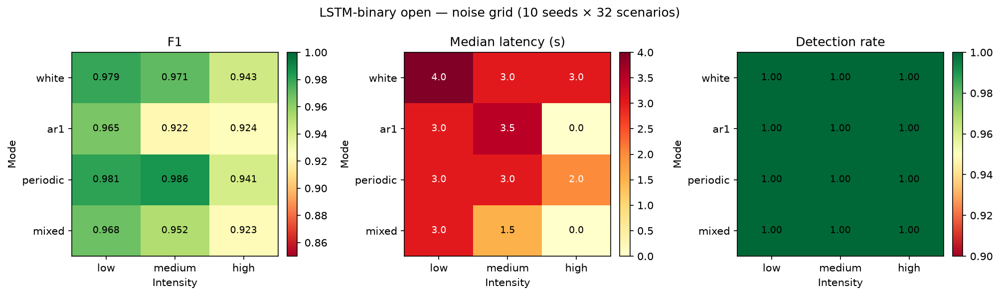

Pooled pre-inject + active-fault windows · τ = 0.5 · catalog caution-margin priors · 3872 runs
white / ar1 / periodic / mixed × low·med·high (2/5/15% σ) · 31 anomalies + 1 nominal · 10 seeds + clean
Clean F1 0.981 · grid F1 0.922–0.986 · worst ar1/med · best periodic/med · detect 31/31 every cell
Median latency stays 0–4 s · high AR1/mixed often fire at inject (lat ≈ 0) via elevated scores
Low white & periodic: FP = 0, P = 1.0 · high AR1/mixed: P ≈ 0.88–0.89 (nominal FA rises)